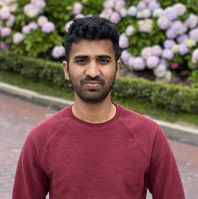

Nithin Rao Koluguri
As a Senior Research Scientist @ NVIDIA Conversational AI, I work on developing speech recogntion, speaker recognition, verification and diarization systems. My research interests include speech signal processing, natural language processing and machine learning.
I received my masters degree from University of Southern California (USC) with a major in Electrical and Computer Engineering. During my masters I carried out research through Signal Analysis and Interpretation Laboratory (SAIL) where I was advised by Prof. Shrikanth Narayanan.
|

|
Industry Experience
Since June 2020, I've been fortunate to work at NVIDIA on some amazing projects in speech AI. I created the TitaNet architecture for speaker recognition, which has become a go-to model across the field and still averages around 1.5 million downloads per month on Hugging Face. I also co-built the first speaker diarization modules in NeMo, using TitaNet embeddings and NME-SC clustering.
Beyond speaker systems, I led the billion-parameter scaling for FastConformer ASR models, helping push the boundaries of what's possible in speech recognition. I've also been leading the development of the Parakeet model series — including parakeet-tdt-0.6b-v2, which currently holds the #1 spot on the Hugging Face Open-ASR leaderboard.
These days, my work is focused on building the next generation of SpeechLM models, pushing the limits of what speech and language models can achieve.
Prior to NVIDIA, I gained valuable experience as an Applied Machine Learning Intern at the Bose CE Applied Research Group during the summer of 2019. There, I developed and deployed NLP and Computer Vision ML systems on mobile devices (Google Pixel) and Bose wearables.
My early industry experience includes working as a Software Developer at Robert Bosch Bangalore (July 2016 - January 2018). In this role, I contributed to Telematics Projects, focusing on customer and production diagnosis and designing features for Daimler. I also worked on integrating Text-to-Speech (TTS) functionalities for various in-car multimedia features like navigation and SMS readout.
|
Academic Experience
During my Master's degree at the University of Southern California (USC), I worked as a Graduate Research Assistant at the Signal Analysis and Interpretation Laboratory (SAIL) from September 2018 to December 2020. Under the guidance of Prof. Shrikanth Narayanan and Prof. Panayiotis Georgiou, my research explored innovative approaches to speaker diarization using prototypical networks, leveraging few-shot meta-learning techniques. I also contributed to improving Automatic Speech Recognition (ASR) by generating n-best path lists from speech recordings under various noise conditions using Kaldi, aiming to reduce ASR error rates.
Before my Master's studies, I served as a Research Assistant at the SPIRE LAB at the Indian Institute of Science (IISc), Bangalore, from January to July 2018. Advised by Prof. Prasanta Kumar Ghosh, my work focused on leveraging voice as a biomarker. I built speech classifiers to aid in the detection of Amyotrophic Lateral Sclerosis (ALS) and Parkinson's (PD) diseases and analyzed the effectiveness of different speech stimuli and recording devices for this diagnostic goal.
|
Research
I am interested in understanding signal level properties of audio,speech and Image. My research experiences thus far delve in natural language processing and applying machine learning algorithms on speech & image.
|
Sortformer: Seamless integration of speaker diarization and ASR by bridging timestamps and tokens
Taejin Park, Ivan Medennikov, Kunal Dhawan, Weiqing Wang, He Huang, Nithin Rao Koluguri, Krishna C Puvvada, Jagadeesh Balam, Boris Ginsburg
Submitted to ICML 2025
|
NEST: Self-supervised Fast Conformer as All-purpose Seasoning to Speech Processing Tasks
He Huang, Taejin Park, Kunal Dhawan, Ivan Medennikov, Krishna C Puvvada, Nithin Rao Koluguri, Weiqing Wang, Jagadeesh Balam, Boris Ginsburg
IEEE International Conference on Acoustics, Speech and Signal Processing (ICASSP), 2025
|
META-CAT: Speaker-Informed Speech Embeddings via Meta Information Concatenation for Multi-talker ASR
Jinhan Wang, Weiqing Wang, Kunal Dhawan, Taejin Park, Myungjong Kim, Ivan Medennikov, He Huang, Nithin Koluguri, Jagadeesh Balam, Boris Ginsburg
IEEE International Conference on Acoustics, Speech and Signal Processing (ICASSP), 2025
|
Longer is (Not Necessarily) Stronger: Punctuated Long-Sequence Training for Enhanced Speech Recognition and Translation
Nithin Rao Koluguri, Travis Bartley, Hainan Xu, Oleksii Hrinchuk, Jagadeesh Balam, Boris Ginsburg, Georg Kucsko
IEEE Spoken Language Technology Workshop (SLT), 2024
/ project page
|
Bestow: Efficient and streamable speech language model with the best of two worlds in GPT and T5
Zhehuai Chen, He Huang, Oleksii Hrinchuk, Krishna C Puvvada, Nithin Rao Koluguri, Piotr Żelasko, Jagadeesh Balam, Boris Ginsburg
IEEE Spoken Language Technology Workshop (SLT), 2024
/ project page
|
Less is More: Accurate Speech Recognition & Translation without Web-Scale Data
Krishna C. Puvvada, Piotr Zelasko, He Huang, Oleksii Hrinchuk, Nithin Rao Koluguri, Kunal Dhawan, Somshubra Majumdar, Elena Rastorgueva, Zhehuai Chen, Vitaly Lavrukhin, Jagadeesh Balam, Boris Ginsburg
International Speech Communication Association (Interspeech), 2024
/ project page
|
Codec-ASR: Training Performant Automatic Speech Recognition Systems with Discrete Speech Representations
Kunal Dhawan, Nithin Rao Koluguri, Ante Jukic, Ryan Langman, Jagadeesh Balam, Boris Ginsburg
International Speech Communication Association (Interspeech), 2024
/ project page
|
Discrete Audio Representation as an Alternative to Mel-Spectrograms for Speaker and Speech Recognition
Krishna C Puvvada, Nithin Rao Koluguri, Kunal Dhawan, Jagadeesh Balam, Boris Ginsburg
International Conference on Acoustics, Speech and Signal Processing (ICASSP), 2024
/ project page
|
Investigating End-to-End ASR Architectures for Long Form Audio Transcription
Nithin Rao Koluguri, Samuel Kriman, Georgy Zelenfroind, Somshubra Majumdar, Dima Rekesh, Vahid Noroozi, Jagadeesh Balam, Boris Ginsburg
International Conference on Acoustics, Speech and Signal Processing (ICASSP), 2024
/ project page
|
Enhancing Speaker Diarization with Large Language Models: A Contextual Beam Search Approach
Tae Jin Park, Kunal Dhawan, Nithin Koluguri, Jagadeesh Balam
International Conference on Acoustics, Speech and Signal Processing (ICASSP), 2024
/ project page
|
Fast conformer with linearly scalable attention for efficient speech recognition
Dima Rekesh, Nithin Rao Koluguri, Samuel Kriman, Somshubra Majumdar, Vahid Noroozi, He Huang, Oleksii Hrinchuk, Krishna Puvvada, Ankur Kumar, Jagadeesh Balam, Boris Ginsburg
IEEE Automatic Speech Recognition and Understanding Workshop (ASRU), 2023
/ project page
|
|
Open Automatic Speech Recognition Leaderboard
Sanchit, Hugging Face Team, Nvidia NeMo Team, SpeechBrain Team, Vaibhav Srivastav, Somshubra Majumdar, Nithin Koluguri, Adel
/ project page
|
A Compact End-to-End Model with Local and Global Context for Spoken Language Identification
Fei Jia, Nithin Rao Koluguri, Jagadeesh Balam, Boris Ginsburg
International Speech Communication Association (Interspeech), 2023
/ project page
|
Property-Aware Multi-Speaker Data Simulation: A Probabilistic Modelling Technique for Synthetic Data Generation
Tae Jin Park, He Huang, Coleman Hooper, Nithin Rao Koluguri, Kunal Dhawan, Ante Jukić, Jagadeesh Balam, Boris Ginsburg
International Speech Communication Association (Interspeech), 2023
/ project page
|
The CHiME-7 Challenge: System Description and Performance of NeMo Team's DASR System
Tae Jin Park, He Huang, Ante Jukic, Kunal Dhawan, Krishna C Puvvada,Nithin Koluguri , Nikolay Karpov, Aleksandr Laptev, Jagadeesh Balam, Boris Ginsburg
International Speech Communication Association (Interspeech), 2023
/ project page
|
Multi-scale Speaker Diarization with Dynamic Scale Weighting
Taejin Park, Nithin Rao Koluguri, Jagadeesh Balam, Boris Ginsburg
International Speech Communication Association (Interspeech), 2022
/ project page
|
TitaNet: Neural Model for speaker representation with 1D Depth-wise separable convolutions and global context
Nithin Rao Koluguri, Taejin Park, Boris Ginsburg
International Conference on Acoustics, Speech and Signal Processing (ICASSP), 2022
/ project page
|
SpeakerNet: 1D Depth-wise Separable Convolutional Network for Text-Independent Speaker Recognition and Verification
Nithin Rao Koluguri, Jason Li, Vitaly Lavrukhin, Boris Ginsburg
International Conference on Acoustics, Speech and Signal Processing (ICASSP), 2021
/ project page
|
Meta-learning for robust child-adult classification from speech
Nithin Rao Koluguri, Manoj Kumar, So Hyun Kim, Catherine Lord, Shrikanth Narayanan
International Conference on Acoustics, Speech and Signal Processing (ICASSP), 2020
/ project page
|
Comparison Of Speech Tasks And Recording Devices For Voice Based Automatic Classification Of Healthy Subjects And Patients With Amyotrophic Lateral Sclerosis
Suhas B.N, Deep Patel, Nithin Rao Koluguri, Prasanta Ghosh*
International Speech Communication Association (Interspeech) , 2019
/ project page
|
Spectrogram Enhancement Using Multiple Window Savitzky-Golay (MWSG) Filter for Robust Bird Sound Detection
Nithin Rao Koluguri, Nisha G Meenakshi*, Prasanta Ghosh*
IEEE/ACM Transactions on Audio, Speech, and Language Processing, 2017
/ project page
|
|
Conferences:
- 2025 IEEE International Conference on Acoustics, Speech and Signal Processing (ICASSP)
- 2024 ISCA Computer Speech & Language (CSL)
- 2024 IEEE Spoken Language Technology Workshop (SLT)
- 2024 International Speech Communication Association (Interspeech)
- 2024 IEEE International Conference on Acoustics, Speech and Signal Processing (ICASSP)
- 2023 IEEE Automatic Speech Recognition and Understanding Workshop (ASRU)
- 2023 IEEE International Speech Communication Association (Interspeech)
|
|